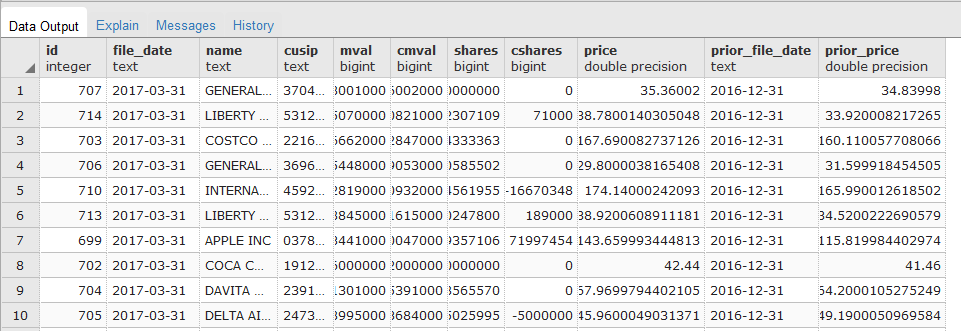

The purpose of this project was to analyze the holdings of Berkshire Hathaway to determine what securities the company is invested in.
The SEC Form 13F is a filing with the Securities and Exchange Commission (SEC) also known as the Information Required of Institutional Investment Managers Form. It is a quarterly filing required of institutional investment managers with over $100 million in qualifying assets. Companies required to file SEC Form 13F may include insurance companies, banks, pension funds, investment advisers and broker-dealers.
SEC Form 13F, which must be filed within 45 days of the end of each quarter, contains information about the investment manager and potentially a list of their recent investment holdings. These filings provide insight into the holdings of investment managers.
Companies submit their SEC13F filings using the EDGAR System. These filings are made public on the SEC website.
Warren Buffett is one of the most successful investors of all time, with $81 billion in assets. Warren Buffet's majority net worth is mainly wrapped up in the company he built, Berkshire Hathaway, Inc. Berkshire Hathaway, Inc. engages in the provision of property and casualty insurance and reinsurance, utilities and energy, freight rail transportation, finance, manufacturing, retailing, and services. As of December 12, 2017, one share of BRK-A stock is $298,630.
The EDGAR system also has an API
Jupyter Notebook: SEC13F_API
This notebook was developed to explore the API.
API Limitation The API only has current holdings available. My communications with the API contact confirmed that no historical data is available and the request is not on their roadmap. So using the API for information was not a possibility.
Jupyter Notebook: SEC13F_STEP1_SaveFilings
Since all the SEC13F filings are available online. I used BeautifulSoup to save the xml filings from online to a local directory named filings.
Limitations
Jupyter Notebook: SEC13F_STEP2_CleanFilings
This notebook opens each xml file and parses the data for the following fields
Jupyter Notebook SEC13F_STEP3_SaveDataToDB
This notebook reads the csv file into a Pandas dataframe and uses SQLAlchemy's ORM functionality to save the data to a PostgreSQL database. The csv data is saved to a positions table.
Jupyter Notebook SEC13F_STEP4_GetDecoratedData
This notebook reads the positions table in the PostgreSQL database: sec13f to get a unique list of CUSIP. The notebook then scrapes the Search13F website to get classification information such as the Industry Sector and Industry Group.
The CUSIP, Industry Sector, and Industry Group data are then stored into a csv file, decorated_data.csv.
Jupyter Notebook SEC13F_STEP5_SaveDecoratedDataToDB
This notebook reads the csv file into a Pandas dataframe and uses SQLAlchmey's ORM functionality to save the data to a PostgreSQL database. The csv data is saved to a securitiesEX table.
Jupyter Notebook SEC13F_STEP6_HandleMissingData
Some CUSIP have missing Industry Sector or Industry Group because they are no longer traded due to corporation reorganizations like mergers, exchanges, or spinoffs.
This notebook identifies CUSIP with missing industry sector and/or industry group. A manual intervention is done to lookup the missing information. The research information is then put into a dictionary which is then used to update the indsectorindgroup table in the PostgreSQL database.
Jupyter Notebook SEC13F_STEP7_AnalyzeData
SEC13F data from sec13f.xml filings only include name, CUSIP, market value and shares held. Where as, data attained from the SEC13F API is more comprehensive and includes derived values like change in market value and change in shares held.
This notebook uses Pandas dataframes to join data to get the prior quarter filing to get derived values for change in market value and change in shares held. These values are not available for the first date, 2013-06-30. The processed data is stored in a new postgresql tabled called processed_positions.
SEC13F_STEP8_ProcessPositions

This python script uses Flask to create APIs to retrieve data from the SEC13F postgresql DB.
The web dashboard uses bootstrap, D3, D3Plus, and DataTables to allow the user to select a file date and display the positions held by Berkshire Hathaway according to the SEC13F form filed.
Limitations